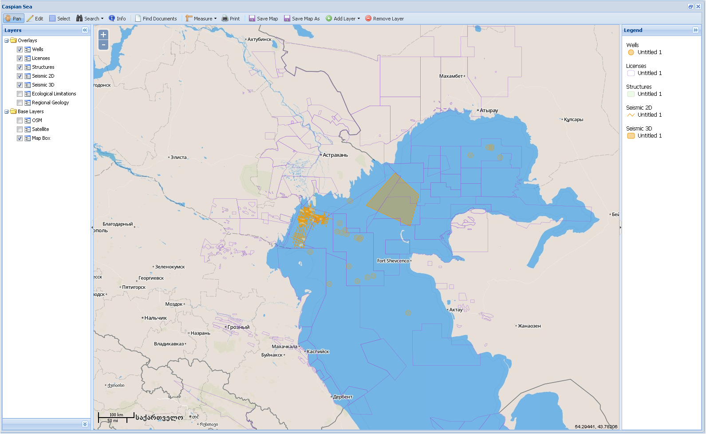
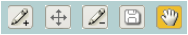
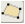
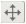
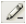
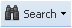
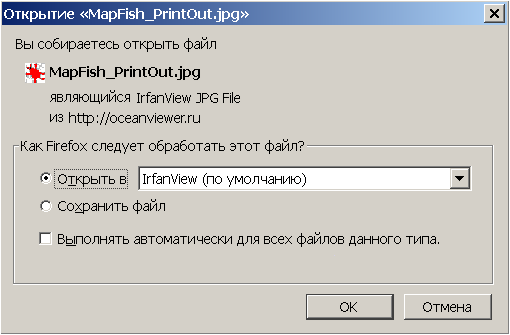
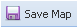
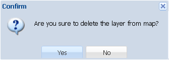

Меню Map
Меню Map (Карта) служит для просмотра карты и управления пространственными объектами, к которым осуществлена привязка документов. Меню имеет опции выбора карт: Caspian Sea (базовая) и все сохраненные пользовательские карты.
При выборе нужной карты она появится рабочем окне Приложения. Рабочее окно имеет три поля: главное поле – для выведения карты в полноэкранном режиме, и два вспомогательных – для управления картографическими основами и тематическими слоями (слева) и для размещения легенды (справа). Вспомогательные поля имеют динамические границы и могут быть полностью свернуты.
Вспомогательное поле Layers (Слои) позволяет управлять видом отображаемой карты. Для этого пользователь должен выбрать и отметить галочкой удобную для него картографическую основу (Base Layers) (два вида картооснов или космический снимок), а также отметить необходимые для работы тематические слои (Overlays), отключив ненужные. Набор тематических слоев определяется администратором системы.

В нижней части поля находится изначально свернутая панель регулирования прозрачности/непрозрачности объектов тематических слоев. При засветке курсором названия любого тематического поля эта панель развернется и отобразит шкалу с бегунком для регулирования степени прозрачности (от 0% до 100%) объектов данного слоя.
Вспомогательное поле Legend (Легенда) служит для распознавания отображённых на карте пространственных объектов.
В главном поле карту можно уменьшать или увеличивать с помощью встроенного инструмента масштабирования , а также используя стандартные возможности колеса мыши: прокрутка от себя – приближение к объекту, на себя – отдаление от объекта.
Функциональные возможности главного поля представлены на панели меню интерфейса карты.
1. Меню (Панорамировать карту) - перемещение карты в главном поле.
При активном инструменте можно перемещать видимую область карты, двигая курсор с зажатой левой кнопкой мыши. При этом курсор мыши поменяет вид с на .
2. Меню (Редактировать) – изменение пространственных объектов, представленных на карте.
Чтобы приступить к редактированию, сначала следует выбрать тематический слой, в котором предполагается производить изменения. Для этого нужно выделить (засветить) название этого слоя во вспомогательном поле Layers, нажав курсором на его названии.
После выбора тематического слоя и активации меню в правом верхнем углу поля карты появятся кнопки инструментария для редактирования. Вид некоторых кнопок (в частности, кнопок рисования) может меняться в зависимости от выбранного типа редактируемого объекта. Кнопки активируются нажатием курсора на них, при этом они подсвечиваются жёлтым цветом.

Кнопки , ,  - инструменты Draw Point, Draw Line, Draw Polygon (Рисование объектов: точки, линии, полигоны). После активации курсор поменяет вид с на .
Для нанесения на карту точечного объекта следует подвести курсор к нужной точке и нажать кнопку мыши. В появившемся дополнительном окне Specify Attributes заполнить атрибутивные поля.
Для нанесения на карту линейного объекта надо нажать кнопку мыши в начальной точке (в точках поворота тоже разовое нажатие) и дважды нажать кнопку в конечной точке объекта. В появившемся дополнительном окне Specify Attributes заполнить атрибутивные поля.
Для нанесения на карту полигонального объекта его территория очерчивается многоугольником, завершающая точка многоугольника ставится двойным нажатием левой кнопки мыши. В появившемся дополнительном окне Specify Attributes заполнить атрибутивные поля.
Кнопка  - инструмент Modify Feature (Изменение местоположения или формы объекта). После активации следует навести курсор на редактируемый объект и нажать кнопку мыши, чтобы объект поменял цвет.
При нажатой кнопке можно:
- переместить точечный объект в новое место,
- изменить положение начальной и/или конечной точек линейного объекта,
- изменить положение угловых точек многоугольника у полигонального объекта.
Кнопка  - инструмент Delete Feature (Удаление объекта). После активации навести курсор на удаляемый объект и нажать кнопку мыши.
Кнопка - инструмент Save Changes (Сохранение изменений). Сохраняет результаты редактирования объектов.
Кнопка - инструмент Pan Map (Панорамирование карты). Перемещение карты по полю. Кнопка активирована по умолчанию после входа пользователя в режим редактирования пространственных объектов.
3. Меню (Выбрать) – выбор одного или нескольких объектов на карте.
При активном инструменте следует навести курсор на нужный объект, и нажать левую кнопку мыши. Выделенный объект поменяет цвет.
Выбрать несколько объектов можно, очертив их прямоугольной областью, перемещая курсор в рабочем окне карты.
Снять выделение объекта можно, снова нажав на него курсором.
4. Меню  (Искать) - поиск объекта по заданному значению атрибута. Имеет две опции - Any и by Attribute.
Опция Any предполагает поиск объекта по его атрибуту в любом из слоев карты. Для поиска необходимо активировать кнопку меню и в появившемся дополнительном окне Simple Search ввести значение атрубута для поиска.
Найденный объект подсветится на карте.
Опция by Attribute предполагает поиск объекта по его атрибуту в конкретном слое карты. Для поиска необходимо засветить требуемый слой во вспомогательном поле Layers и активировать данную опцию. В появившемся дополнительном окне Find By Attributes (для различных типов объектов вид данного окна будет отличаться разным набором атрибутивных полей) ввести атрибуты объекта, по которым будет осуществляться его поиск, и нажать кнопку Search. Чтобы Приложение осуществляло поиск значения атрибута во всех полях, его следует вводить в окошке Any field. Для сужения поиска можно ввести значение в то поле атрибута, по которому предполагается искать объекты. Найденный объект подсветится на карте.
5. Меню (Информация) - получение информации об объекте.
При активном инструменте следует навести курсор на нужный объект, и нажать левую кнопку мыши. Объект засветится и появится дополнительное окно Features с атрибутивными характеристиками данного объекта.
В правом нижнем углу окна Features имеется опция Documents, при выборе которой появится дополнительное окно Found Documents с перечнем всех документов, относящихся к этому объекту. Работа с этим окном аналогична действиям с командой Find (см. Простой поиск).
6. Меню (Найти документы) – поиск документов, имеющих привязку к пространственным объектам.
Для получения информации о документах, связанных с пространственным объектом, необходимо выделить тематический слой, в котором находится объект, выбрать его с помощью меню и нажать кнопку . Появится дополнительное окно Found Documents, в котором будут выведены найденные документы. Работа с этим окном аналогична действиям с командой Find (см. Простой поиск).
7. Меню (Измерить) – измерение длины или площади на карте.Имеет две опции: Distance (Расстояние) и Area (Площадь).
Для измерения линейного объекта надо выбрать опцию Distance, нажать кнопку мыши в начальной точке объекта (в точках поворота тоже разовое нажатие) и дважды нажать кнопку в конечной точке объекта. В появившемся окне будет указана измеренная длина в км.
8. Меню (Печать) - сохранение карты в одном из выбранных форматов для печати.
Необходимо активировать кнопку и в появившемся дополнительном окне Print Configuration осуществить настройку печати - в поле Map Title ввести название карты, в поле Map Comments - комментарии, в поле Layout - выбрать размер листа для печати, в поле DPI - задать плотность печати, в поле Format - выбрать формат файла. После завершения нажать кнопку Make Print Page.

9. Меню  (Сохранить карту) - сохранение открытой карты со всеми проведенными изменениями с тем же названием.
10. Меню (Сохранить как) – сохранение карты с новым названием.
11. Меню (Добавить слой) – добавление слоев. Имеет две опции - Base Layer (Базовый слой) и Info Layer (Тематический слой).
После активации нужной опции заполнить необходимые поля в дополнительном окне и нажать кнопку Add. Новый слой появится в списке слоев соответствующего вида в поле Layers.
12. Меню (Удалить слой) – удаление слоев.
Засветить курсором удаляемый слой в списке слоев в поле Layers и активировать меню. Появится окно предупреждения с требованием подтвердить удаление слоя с карты.

Если удаляемый слой не задан, программа попросит сначала выбрать слой.